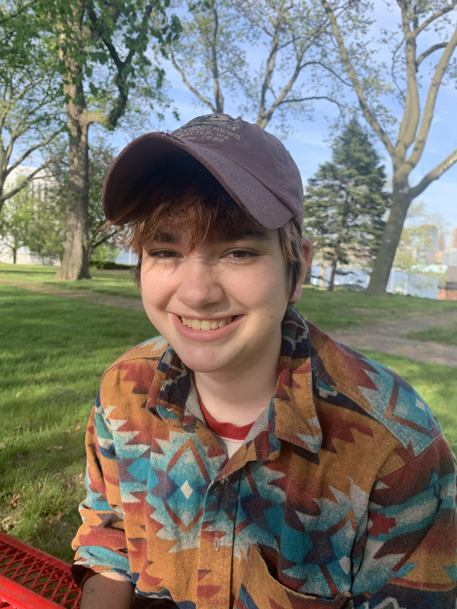

Emma Waddell is a computer scientist and musician studying at NYU Gallatin. Their concentration is focused on how natural and biological processes influence algorithmic and computer music. This includes simulations and the use of neural networks, as well as the study of communication from a musical/visual and linguistic standpoint.
They have received multiple research grants to study these ideas, and create new music using their computer and their saxophone.
Additionally they have studied extensive music theory through jazz saxophone and classical piano.
They are also interested in video game development and woodworking!
Look through this portfolio to read about their research and listen to some notable live performances.
Copyright © Emma Waddell 2021. All Rights Reserved